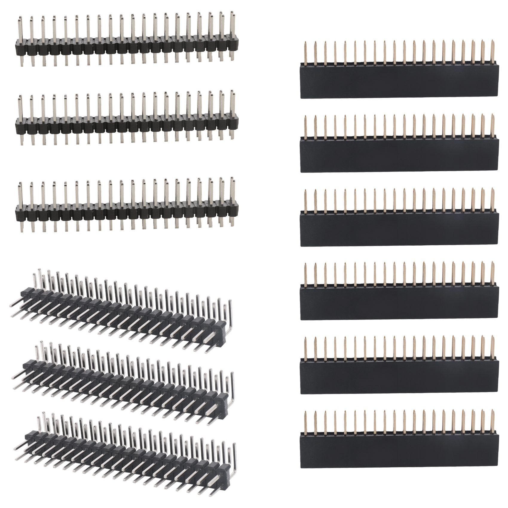

Разъёмы GPIO 40-pin для Raspberry Pi (комплект 12 шт)
РазъёмыКатегория
Разъёмы
Тип разъёма
двухрядный, 2×20 контактов
Шаг контактов
2.54 мм
Количество контактов
40
Назначение
GPIO / питание / интерфейсы расширения
Совместимость
Raspberry Pi с 40-pin GPIO header
Форм-фактор
сквозной разъём для пайки на плату
Количество в комплекте
12 шт
Кратко
Это 40-контактный разъём GPIO формата 2×20 для Raspberry Pi. Используется для подключения плат расширения, датчиков, модулей и проводного вывода питания/сигналов.
Описание
Это стандартный 40-pin GPIO-разъём для Raspberry Pi с шагом 2.54 мм. Обычно такие разъёмы ставят на HAT-платы, переходники и монтажные платы, чтобы подключаться к GPIO, питанию и шинам I2C/SPI/UART. Для Raspberry Pi 40-контактный интерфейс используется на современных платах семейства Raspberry Pi с 40-pin header. Комплект из 12 шт — это просто набор одинаковых разъёмов для пайки или ремонта. По назначению это пассивная соединительная деталь, без собственной логики.
Документация
Официальная документация Raspberry Pi: GPIO и 40-контактный разъёмОфициальная спецификация HAT+ Raspberry Pi
id hw-2026-036